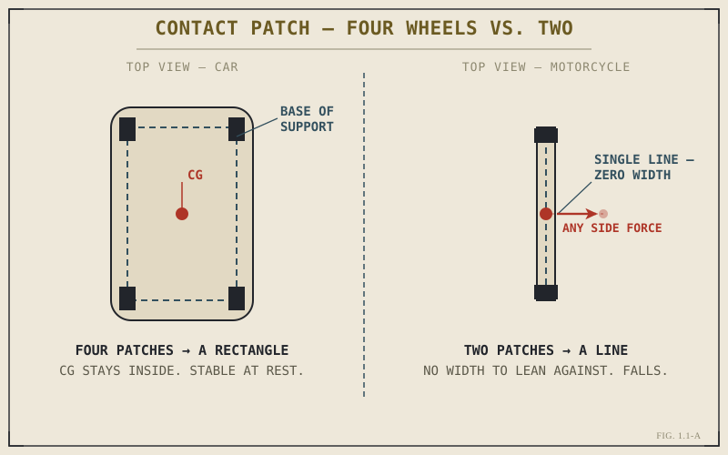

Ask someone what a motorcycle is, and they'll usually tell you what it looks like. Two wheels. An engine. Handlebars instead of a steering wheel. That's not wrong, exactly. It's also not an answer. It describes the shape of the thing without touching why the thing exists at all.
Here's a better question, and the one this book actually opens with: if someone handed you every tool, every material, and every ounce of engineering knowledge in the world, and asked you to build the most efficient possible way to move a human being from one point to another under their own power and control — would you end up with a motorcycle?
The honest answer is: not obviously. A car is more stable. A car is more comfortable. A car protects you from weather, from other vehicles, from your own mistakes. A car can carry more people and more cargo. By almost every conventional measure of "better," a car wins.
And yet motorcycles exist, get built by the millions every year, and get chosen — not settled for, chosen — by people who could afford a car and didn't want one. That's the actual puzzle of this first chapter. Not "what is a motorcycle," but "why would anyone rationally prefer this."
The answer is going to take the whole book to fully unpack, because it touches physics, economics, geography, and human psychology all at once. But we can lay the foundation right here, and everything else in this book will build on it.
The Real Difference Isn't the Number of Wheels
It's tempting to think the defining feature of a motorcycle is that it has two wheels instead of four. That's true, but it's a symptom, not the cause. The actual defining feature — the thing that makes a motorcycle a motorcycle and not just "a small car" — is this:
A motorcycle cannot balance itself. You are the balancing system.
A car, at rest or in motion, is a stable platform. Take your hands off the wheel at a stoplight and the car just sits there, held up by four contact points arranged in a rectangle. Nothing about the car needs you to keep it upright. Your job, as the driver, is purely to choose where it goes.
A motorcycle at rest, with nobody holding it, falls over. Every single time. There is no configuration of two in-line wheels that produces static stability the way four wheels do. The motorcycle only becomes a stable, controllable machine once it's moving, and once a rider is actively — even if unconsciously — managing its balance through steering input, body position, and throttle.
This is not a minor technical detail. It is the single fact from which almost everything else about motorcycle design, motorcycle riding, and motorcycle culture flows. Read that sentence again, because we're going to come back to it constantly throughout this book:
A motorcycle is not a smaller, cheaper car. It is a fundamentally different kind of machine, because it requires the rider to be part of the control system, not just an operator of it.

Contact patch comparison — four-wheel stability rectangle vs. two-wheel single-line contact.
Why Would Anyone Design a Machine That Can't Stand on Its Own?
This sounds like a flaw until you understand what it buys you.
Every wheel a vehicle has costs something: weight, width, complexity, rolling resistance, manufacturing cost. A four-wheeled vehicle needs a wide structure to hold those wheels apart, which means it needs more material, more mass, and more road width to operate in. A two-wheeled, in-line vehicle needs none of that. It can be narrow enough to fit through a gap in traffic that a car couldn't dream of entering. It can weigh a fraction of what a car weighs, which means the same amount of engine power produces dramatically more acceleration per kilogram of machine. It can be parked in a space that would embarrass a compact car.
None of that is free, though. What you give up by removing two wheels is inherent stability, and inherent stability is exactly what makes a car easy to operate and forgiving of mistakes. In exchange, the motorcycle asks something of you that the car never does: active, continuous, skilled participation in keeping the machine upright and pointed where you want it to go.
This is the trade at the heart of the entire machine. Everything else — the engine, the frame, the suspension, the brakes — exists to serve this one relationship between rider and machine. A motorcycle designer isn't just building a vehicle. They're building half of a system where the other half is a human being's balance, reflexes, and judgment.
That's worth sitting with for a second, because it's genuinely unusual as far as machines go. Your washing machine doesn't need your balance to function. Your car doesn't either. A motorcycle does. You are not a passenger being carried by the machine. You are a structural component of it, from the moment it starts rolling to the moment it stops.
The Rider Isn't Using the Machine — They're Completing It
This idea gets its own full chapter later (1.4), but it needs to be planted here, at the very beginning, because it changes how you should read everything that follows in this book.
When you read about rake and trail in Part IV, you'll learn that these geometric numbers determine how much the front wheel wants to self-correct and stabilize itself. But "wants to self-correct" only means something in combination with a rider who's leaning, countersteering, and shifting weight. The geometry doesn't operate alone. It operates in a loop with you.
When you read about suspension in Part V, you'll learn that a suspension system's job is to keep the wheel following the ground. But how well it does that job depends partly on how the rider is positioned, how much weight is on the front versus the back, and what the rider is asking the machine to do at that instant — braking, cornering, accelerating.
When you get to Part VIII and we talk about gyroscopic effects, cornering forces, and load transfer, you'll see this same idea show up mathematically: the equations that describe a motorcycle's behavior almost always include rider mass, rider position, or rider input as a variable. Not as an afterthought. As a term in the equation.
A car's handling can, in principle, be described without ever mentioning the driver. A motorcycle's handling cannot. This is the deepest reason a motorcycle isn't simply a "smaller car" — it belongs to a different category of machine, one defined by rider-vehicle interdependence rather than rider-vehicle separation.
So Why Do People Actually Choose This?
Set the engineering aside for a moment and ask the human question. Given that a motorcycle is objectively less stable, less protective, less comfortable, and less practical for carrying people and things — why does anyone want one?
A few honest reasons, and it's worth naming them plainly instead of romanticizing past them:
Efficiency of movement. In dense traffic, a narrow vehicle that can filter between lanes, accelerate hard from a stop, and park almost anywhere is often simply the faster, more practical choice — not a lifestyle statement, just math. In much of the world, this is the primary reason motorcycles exist on the road at all: they are the most efficient tool for the actual problem of getting through crowded streets.
Cost. A motorcycle typically costs less to buy, less to fuel, and less to maintain than a car with comparable performance. For a huge portion of the world's population, a motorcycle isn't a toy or a hobby — it's the only vehicle they can afford, and it does the job of transportation better per rupee, per dollar, per peso than anything else available.
The nature of the control itself. And then there's the reason that doesn't show up on a spreadsheet. Being the balancing system, rather than a passenger inside one, changes your relationship to the road in a way that's hard to describe to someone who hasn't felt it. In a car, the road is something happening outside the vehicle, on the other side of glass and steel. On a motorcycle, the road's surface, camber, temperature, and grip are things you feel directly, continuously, through the machine and into your body. Riding well requires a kind of attention that driving simply doesn't demand — and a lot of riders will tell you, honestly, that this heightened attention is not a burden of motorcycling but the actual point of it.
This book isn't going to pretend the third reason is the only one that matters, or that it's more "authentic" than the first two. All three are real, and most riders are motivated by some mixture of all of them. But the third reason is the one this book cares about most, because it's the one rooted in actually understanding the machine — and understanding is what turns a rider who merely operates a motorcycle into a rider who's genuinely good at it.
A Common Misconception, Cleared Up Early
People sometimes describe a motorcycle as "more dangerous" than a car, full stop, as if danger were a fixed property stamped onto the machine at the factory. It's more accurate — and more useful to you as a future skilled rider — to say a motorcycle has a much smaller margin for operator error than a car does, in most situations, because it lacks a car's structural stability and crash protection.
This isn't a technicality. It changes what you should actually do about it. "Motorcycles are dangerous" invites fatalism — nothing to be done, just accept the risk. "Motorcycles have a smaller margin for error" invites competence — ride in a way that respects that margin, understand exactly where it's thin and where it's thicker, and close the gap with skill, awareness, and mechanical sympathy rather than blind confidence.
Nearly every part of this book, from the physics in Part VIII to the riding technique in Part IX, is aimed at widening that margin. Understanding how your tyres actually generate grip, how weight transfers under braking, how your suspension is managing the contact patch beneath you — none of this is trivia. It's the raw material of riding well, and riding well is what closes the gap between "dangerous machine" and "machine that rewards skill."
The Motorcycle as a System, Not a Collection of Parts
One last idea to plant here, because it's the organizing principle of this entire book: a motorcycle only makes sense when you stop looking at its parts individually and start looking at how they talk to each other.
The engine produces torque. That torque means nothing on its own — it has to pass through a clutch and a gearbox before it becomes useful, and how it's geared changes how the whole bike accelerates and where its top speed sits. The suspension keeps the wheels in contact with the ground, but what the suspension needs to do changes completely depending on whether you're braking, cornering, or accelerating — which means the suspension's job is defined by the brakes and the tyres just as much as by the springs and dampers inside it. The chassis geometry determines how the bike wants to turn, but "wants to turn" only becomes "does turn" through what the rider does with their body and the handlebars.
Nothing on a motorcycle does its job in isolation. Everything is coupled to something else, and a change in one system almost always shows up as a change somewhere you didn't expect. Fit a wider rear tyre and you've changed how the bike turns, not just how it grips. Raise the rear ride height and you've changed the steering geometry, not just the ground clearance. Change the final drive gearing and you've changed acceleration, top speed, and engine wear characteristics all at once.
This is why the book is structured the way it is. Part II through Part VII walk through the individual systems — engine, transmission, chassis, suspension, tyres, brakes — one at a time, because you do need to understand each piece before you can understand how they interact. But Part VIII exists specifically to put them back together, because a motorcycle understood only as a list of separate components isn't actually understood at all.
By the end of this book, the goal isn't for you to be able to recite what a camshaft does. It's for you to look at a motorcycle sitting in a parking lot and see a single, interconnected argument — an answer, built in metal and rubber, to the question of how to move a human being efficiently, cheaply, and directly through the world, at the cost of asking that human being to become part of the machine that carries them.
That's what a motorcycle really is. Everything from here is detail.
Key Concepts to Remember
- A motorcycle's defining trait isn't wheel count — it's that the machine cannot balance itself and requires the rider as an active part of its control system.
- This rider-machine interdependence is the root cause of nearly every other motorcycle-specific design consideration covered later in this book.
- The trade a motorcycle makes — giving up static stability — buys narrowness, low weight, and high power-to-weight efficiency in return.
- "Dangerous" is the wrong frame. "Smaller margin for operator error" is the accurate one, and it's a margin that skill and understanding can meaningfully widen.
- A motorcycle should be understood as one connected system, not a parts list. Changing one component nearly always changes the behavior of others.
Cross-References Forward
| → Ch. 1.2 | Looks directly at what changes mechanically and dynamically when you remove two wheels — the specific physics behind what's introduced conceptually here. |
| → Ch. 1.4 | Returns to the rider-as-part-of-the-machine idea in full, before any component-level chapters begin. |
| → Pt. VIII | Motorcycle Physics — where the rider-inclusive equations this chapter gestures at are actually written out and explained. (Not yet published.) |
| → Pt. XVI | Engineering Trade-Offs — eventually revisits the core trade of this chapter, stability given up for efficiency, as one instance of a larger pattern. (Not yet published.) |